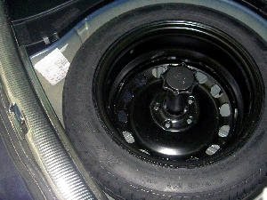
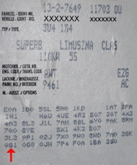

On Skoda cars from year model -00 inclusive there are two kinds of instrument (PR number):
QG1 with flexible LongLife service interval.
QG0 and QG2 with time- and distance-dependent service interval.
To determine which instrument version is fitted to the vehicle, see the vehicle data plate, usuall located in the spare wheel tray. See illustrations below.


On petrol-engined vehicles with flexible service interval, service intervals are calculated on the basis of not only distance covered and time since last service, but also fuel consumption and oil temperature. This calculation gives a figure for the deterioration of the oil in relation to thermal load. On diesel-engined vehicles, the deterioration of the oil is calculated on the basis of engine speed, engine load, distance cover and oil temperature. This gives values for thermal load and carbon deposits. The deterioration of the oil is the deciding factor in determining when the next service is due.
The shortest service interval is 15000 km or 12 months.
The service intervals for flexible oil changes must be programmed as follows:
Instrument QG1
four-cylinder diesel engine:
Oil quality: 4
Maximum distance covered: 50000 km
Maximum time: 24 months
six-cylinder diesel engine:
Oil quality: 3
Maximum distance covered: 35000 km
Maximum time: 24 months
Petrol (gasoline) engines:
Oil quality: 2
Maximum distance covered: 30000 km
Maximum time: 24 months
Engines not run with the oil recommended by the manufacturer for flexible oil changes:
Oil quality: 1 (no flexible oil changes)
Maximur distance covered: 15000 km
Maximum time: 12 months
Changing the service interval
See above for the figures that apply to the vehicle.
Enter the relevant oil quality in the field: Oil quality figure.
Press OK. A dialog box confirms as follows: Operation successful / Operation failed.
Enter the maximum distance before the next service (in 1000s of kilometres) in the field: Upper distance limit to next service.
Press OK. A iialog box confirms as follows: Operation successful / Operation failed.
Enter the maximum time to the next service (in days) in the field: Upper limit for days to next service.
Press OK. A dialog box confirms as follows: Operation successful / Operation failed.
Example
For a Skoda Superb 1.8T (AWT) with instrument QG1, the values to be entered are:
Oil quality: 2
Maximum distance to the next service in 1000s of km: 30
M ximum time to next service in days: 720
NOTE: The service interval may only be changed at servicing and oil changing.